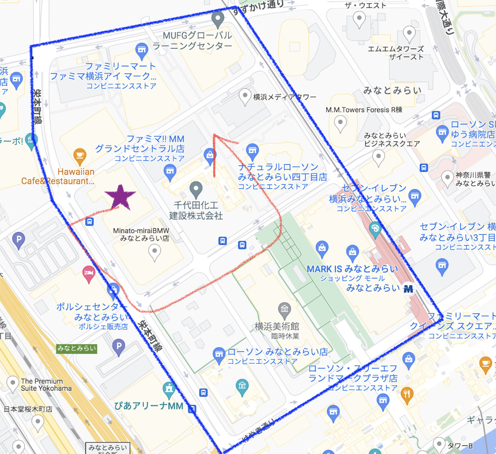

・観察内容：スーツの色 ジャケットを着ていたのか ネクタイの色 鞄なのかリュックなのか
・観察経路：以下の写真のルート

観察の日程・時間：10月18日 3限、4限の時間
観察方法：メンバー１名がスマートフォンで撮影
（今回の観察では、男性18名・女性7名を調査した）
撮影した動画の人の年代は20代から50代が多いかった。（見た目の推測）以下が調査結果である。
・男女の人数：25名（男子18名・女子７名）
・スーツの種類の色の分類：黒・紺色の２種類
・ジャケット着ていた人５人
・ネクタイをしていた人３人
・リュックの人3人 バックの人4人
（移動観察で分かったこと）
>
栄本町線ら辺ではスーツを着ている人は少ない逆にスーツ以外の服の人の割合が多い事がわかった。
移動した場所があまり社会人の人が歩くエリアではなかったので社会人の人の傾向は少なかった。
まとめ
今回の観察ではお昼を過ぎたこともあってかスーツを着ている社会人の人の人数が少なかった。
観察をして集計した際に人数が少なすぎたのであまり良い集計にならなかった。今回のことでまず観察をした時間帯が悪かったと思う。
しかし定点観察では社会人の人が多い会社が多くあるエリアで観察をしたので定点観察では移動観察よりも良い結果が出た。
今後、調査や観察をする機会があれば、さらに多くの人を分析し、より信憑性の高い資料を作りたい。そして観察内容がいまいちだと思ったら
内容を変更して新しい方法での観察を試すことも視野に入れたいと思う。
最初のページへ